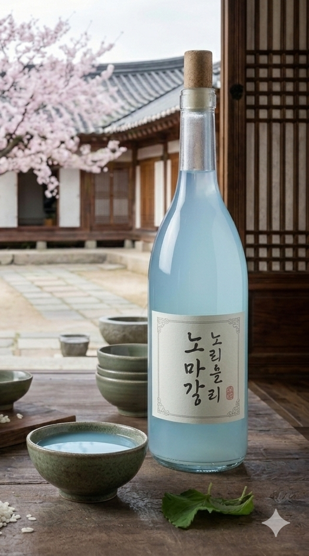
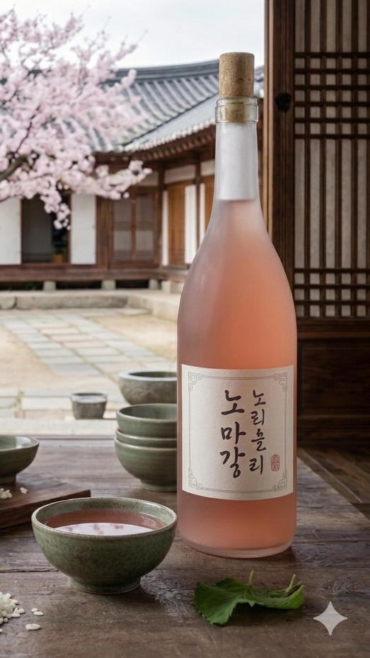

About My Project
Arak beras merupakan hasil dari beras yang difermentasi sehingga dapat menciptakan rasa yang khas. Projek ini menggunakan dua jenis tanaman herbal sebagai bahan tambahan pada arak beras. Jenis tanaman yang digunakan dalah bunga telang dan bunga hibiscus, kedua bunga ini sudah terkenal sebagai pewarna alami pada bahan pangan dan memiliki manfaatnya tersendiri. Dalam penelitian ini arak beras digunakan sebagai media pengujian pengaruh bunga telang dan bunga hibiscus pada bahan pangan.